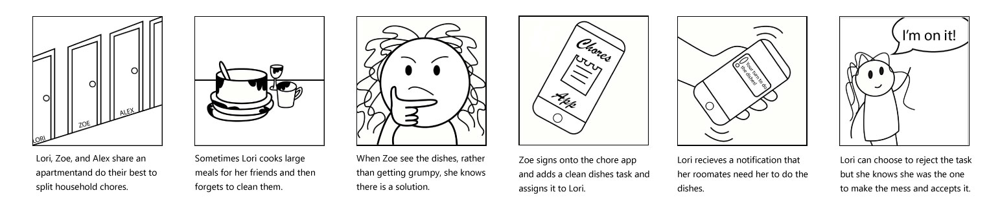
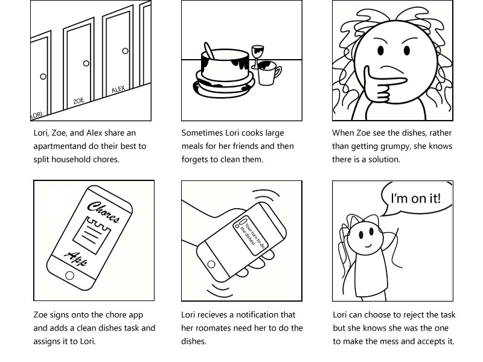
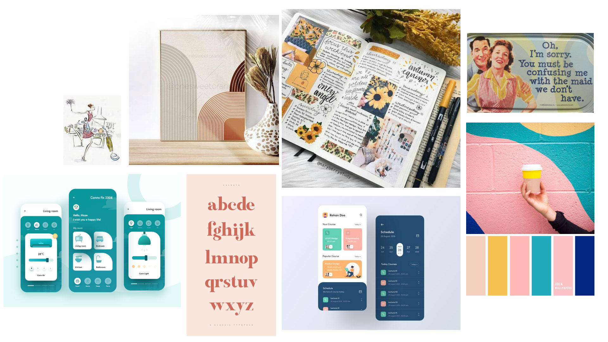
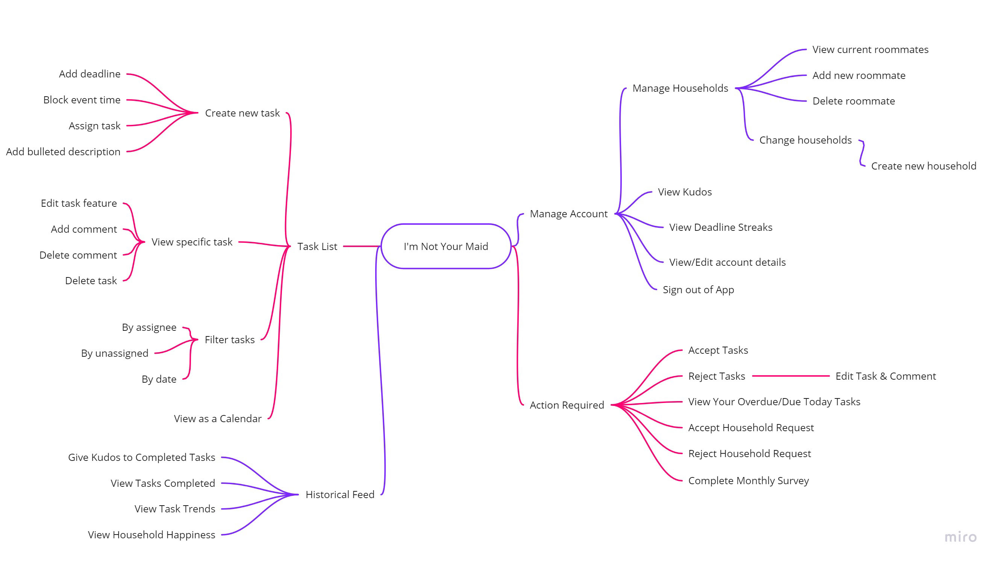

Problem Statement
When individuals cohabitate there should be an agreed upon division of household labour and clear communication. When there is not clear communication, individuals might not understand their responsibilities and the deadlines expected of them. They might not even agree with the tasks. These failures of communication result in individuals not receiving recognition for their work, unequal distribution of labour, unmet deadlines, and general feelings of discontent and tension in the house.
How might we design a mobile application to increase the completion of assigned tasks by their expected deadlines and insure continued discussion about happiness toward the current division of labour?
Identifying the User
One of the most common locations where cohabitation occurs is in college. As our team consists of college students we have easy access to our target demographic and their personal stories about cohabitation. These stories centered around inner household conflicts or grievements that roommates was used to develop a list of current pain points.
One of the first complaints we tended to hear was how messy kitchens could get. As a shared space, if dishes or cooking supplies are left out, the next person in the kitchen might just be adding to a pre-exsisting mess. Studying interactions based around kitchen chores would lead to interesting pain points and really highlight differences in task completion and organization.
 We took these stories and recognized they could be grouped into four types: failure to agree upon responsibilities and deadlines, issues recalling tasks, and issues with communication. In order to get feedback that would be representitive of our future consumers, our particpants will be made up of college students must have atleast one roommate. These goals and painpoints are reflected and further expanded upon whhen we developed our Personas.
Aesthetic Direction
The mood board below shows the direction of design choices to keep in mind when designing the application. It should be clean and neat to compliment the idea of the task list as well as remind users of a journal or a handwritten list without the issues that come along with them.
A more expansive mood map than the image shown below can be found on pinterest.
Contemplating Solutions
Task List
All users will be able to view the task list for their household as well as create new tasks for them or their roommates. While viewing a specific task they will be able to see who is supposed to complete it, when it should be completed by, see the bulleted description of the task, and leave comments. This will allow users to track who is doing what task and identify if they are meeting their deadlines. To accommodate different organization styles, a calendar view will show tasks based on their deadlines.
Monthly Survey
A monthly survey will be sent to all users in a household in order to track their happiness of the tasks being completed. Roommates will be given feedback about how their roommates responded to know if tasks are being completed in a positive manner. This allows roommates to make sure everyone is on the same page and happy with the results of the tasks.
Token Economy
Tasks often remain incomplete due to a failure to negatively or positively reinforce desired behaviors. “I’m not your maid” will attempt to provide positive reinforcement for tasks by letting their fellow housemates provide ‘Kudos’ when chores are done. This will provide recognition and affirmation of their good behavior. Additionally, there will be awards for “Deadline Streak” which marks successfully completing all their chores for a number of weeks in a row.
Historical Feed
A section of the app will provide a historical feed of tasks completed, this information will be organized into charts that can represent how evenly work is currently distributed between household members as well trends for when tasks tend to be marked done. This portion of the app will also have the results of the overall happiness of the household on a monthly basis based on the monthly surveys.
Notifications / Action Required
This portion of the app will work toward notifying the users when their have an upcoming task or other action is required within the app. A phone notification can be used to remind the user that a task is due by the end of that day. It also will be an easy spot for users to see the tasks that they need to still need to take action on (accept or reject assignments of tasks).
Low-fi Prototype
About the Team
On this team, the both of us agree to meet up at least once a week for two hours as well as agree upon a weekly division of labor. Absences or alterations of the meeting date must be discussed atleast one day in advance.
If at any point either member feels that they are doing an unproportionate amount of work, then we will split up the group.